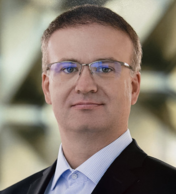

|
 |
Preprints
Z. Tovmasyan, G. Malinovsky, L. Condat, and P. Richtárik, “Revisiting Stochastic Proximal Point Methods: Generalized Smoothness and Similarity,” preprint arXiv:2502.03401, 2025. PDF
G. Meinhardt, K. Yi, L. Condat, and P. Richtárik, “Prune at the Clients, Not the Server: Accelerated Sparse Training in Federated Learning,” preprint arXiv:2405.20623, 2024. PDF
L. Condat and P. Richtárik, “A Simple Linear Convergence Analysis of the Point-SAGA Algorithm,” preprint arXiv:2405.19951, 2024. PDF
A. Sadiev, L. Condat, and P. Richtárik, “Stochastic Proximal Point Methods for Monotone Inclusions under Expected Similarity,” preprint arXiv:2405.14255, 2024. PDF
K. Yi, G. Meinhardt, L. Condat, and P. Richtárik, “FedComLoc: Communication-Efficient Distributed Training of Sparse and Quantized Models,” preprint arXiv:2403.09904, 2024. PDF
L. Guo, S. A. Alghunaim, K. Yuan, L. Condat, and J. Cao, “Revisiting Decentralized ProxSkip: Achieving Linear Speedup,” preprint arXiv:2310.07983, 2023. (former title “RandCom: Random Communication Skipping Method for Decentralized Stochastic Optimization”) PDF
K. Yi, L. Condat, and P. Richtárik, “Explicit Personalization and Local Training: Double Communication Acceleration in Federated Learning,” preprint arXiv:2305.13170, 2023. PDF
L. Condat, I. Agarský, G. Malinovsky, and P. Richtárik, “TAMUNA: Doubly Accelerated Federated Learning with Local Training, Compression, and Partial Participation,” preprint arXiv:2302.09832, 2023. PDF. Note: presented as a poster at the Int. Workshop on Federated Learning in the Age of Foundation Models in Conjunction with NeurIPS 2023 (FL@FM-NeurIPS’23), New Orleans, USA, Dec. 2023
L. Condat, I. Agarský, and P. Richtárik, “Provably Doubly Accelerated Federated Learning: The First Theoretically Successful Combination of Local Training and Compressed Communication,” preprint arXiv:2210.13277, 2022. PDF
International Journals
D. Picone, M. Dalla Mura, and L. Condat, “Joint Demosaicing and Fusion of Multiresolution Coded Acquisitions: A Unified Image Formation and Reconstruction Method,” IEEE Transactions on Computational Imaging, vol. 9, pp. 335-349, 2023. Preprint: PDF
L. Condat, D. Kitahara, A. Contreras, and A. Hirabayashi, “Proximal Splitting Algorithms for Convex Optimization: A Tour of Recent Advances, with New Twists,” SIAM Review, vol. 65, no. 2, pp. 375-435, 2023. PDF
A. Salim, L. Condat, K. Mishchenko, and P. Richtárik, “Dualize, Split, Randomize: Toward Fast Nonsmooth Optimization Algorithms,” Journal of Optimization Theory and Applications, vol. 195, pp. 102-130, Oct. 2022. PDF
L. Condat, “Tikhonov Regularization of Circle-Valued Signals,” IEEE Transactions on Signal Processing, vol. 70, pp. 2775-2782, June 2022. PDF. Matlab code
L. Condat, G. Malinovsky, and P. Richtárik, “Distributed Proximal Splitting Algorithms with Rates and Acceleration,” Frontiers in Signal Processing, vol. 1, Jan. 2022. Note: special issue “Distributed Signal Processing and Machine Learning for Communication Networks”. PDF
H. Kamoshita, D. Kitahara, K. Fujimoto, L. Condat, and A. Hirabayashi, “Multiclass Dictionary-Based Statistical Iterative Reconstruction for Low-Dose CT,” IEICE TRANSACTIONS on Fundamentals of Electronics, Communications and Computer Sciences, vol. E104-A, no. 4, Apr. 2021. PDF
K. Polisano, M. Clausel, V. Perrier, and L. Condat, “Riesz-based orientation of localizable Gaussian fields,” Applied and Computational Harmonic Analysis, vol. 50, pp. 353-385, Jan. 2021. PDF
L. Condat, “Atomic norm minimization for decomposition into complex exponentials and optimal transport in Fourier domain,” Journal of Approximation Theory, vol. 258, Oct. 2020. PDF
D. Orive-Miguel, L. Di Sieno, A. Behera, E. Ferocino, D. Contini, L. Condat, L. Hervé, J. Mars, A. Torricelli, A. Pifferi, and A. Dalla Mora, “Real-time dual-wavelength time-resolved diffuse optical tomography system for functional brain imaging based on probe-hosted silicon photomultipliers,” Sensors, vol. 20, no. 10, pp. 2815, 2020. PDF
Note: the paper was chosen for the cover of the journal.D. Orive-Miguel, L. Hervé, L. Condat, and J. Mars, “Improving Localization of Deep Inclusions in Time-Resolved Diffuse Optical Tomography,” Applied Sciences, vol. 9, no. 24, pp. 5468, 2019. Special issue "New Horizons in Time-Domain Diffuse Optical Spectroscopy and Imaging". PDF
M. Foare, N. Pustelnik, and L. Condat, “Semi-linearized proximal alternating minimization for a discrete Mumford-Shah model,” IEEE Transactions on Image Processing, vol. 29, no. 1, pp. 2176-2189, Dec. 2019. PDF. Matlab code
K. Polisano, L. Condat, M. Clausel, V. Perrier, “A convex approach to super-resolution and regularization of lines in images,” SIAM Journal on Imaging Sciences, vol. 12, no. 1, pp. 211-258, 2019. PDF
F. Iutzeler and L. Condat, “Distributed projection on the simplex and l1 ball via ADMM and gossip,” IEEE Signal Processing Letters, vol. 25, no. 11, pp. 1650-1654, Nov. 2018. PDF
J. Boulanger, N. Pustelnik, L. Condat, L. Sengmanivong, and T. Piolot, “Nonsmooth convex optimization for structured illumination microscopy image reconstruction,” Inverse Problems, vol. 34, no. 9, 2018. PDF
N. Pustelnik and L. Condat, “Proximity operator of a sum of functions; application to depth map estimation,” IEEE Signal Processing Letters, vol. 24, no. 12, pp. 1827-1831, Dec. 2017. PDF.
Note 1: our main property, Proposition II.2, can be generalized to nonseparable functions h satisfying the property of section 2.2.7, point 2, in "A Primer on Coordinate Descent Algorithms" by Shi et al., arXiv:1610.00040v2, for instance the l-infinity norm.
Note 2: work presented at the conference ICASSP 2018.L. Condat, “Discrete total variation: New definition and minimization,” SIAM Journal on Imaging Sciences, vol. 10, no. 3, pp. 1258-1290, 2017. PDF. Matlab code: newTV.zip
J. Frecon, N. Pustelnik, P. Abry, and L. Condat, “On-the-fly approximation of multivariate total variation minimization,” IEEE Transactions on Signal Processing, vol. 64, no. 9, pp. 2355-2364, May 2016. PDF
L. Condat, “Fast projection onto the simplex and the l1 ball,” Mathematical Programming Series A, vol. 158, no. 1, pp. 575-585, July 2016. PDF. Supplementary material: C code condat_simplexproj.c condat_l1ballproj.c . Matlab code: proj_simplex_l1ball.m
L. Condat and A. Hirabayashi, “Cadzow denoising upgraded: A new projection method for the recovery of Dirac pulses from noisy linear measurements,” Sampling Theory in Signal and Image Processing, vol. 14, no. 1, pp. 17-47, 2015. PDF. Supplementary material: Matlab file
J. Schmitt, N. Pustelnik, P. Borgnat, P. Flandrin, and L. Condat, “2-D Prony-Huang transform: A new tool for 2-D spectral analysis,” IEEE Transactions on Image Processing, vol. 23, no. 12, pp. 5233-5248, Dec. 2014. PDF
X. He, L. Condat, J. Bioucas-Dias, J. Chanussot and J. Xia, “A new pansharpening method based on spatial and spectral sparsity priors,” IEEE Transactions on Image Processing, vol. 23, no. 9, pp. 4160-4174, Sept. 2014. PDF
L. Condat, “A generic proximal algorithm for convex optimization - Application to total variation minimization,” IEEE Signal Processing Letters, vol. 21, no. 8, pp. 985-989, Aug. 2014. PDF. Supplementary material: Matlab files
L. Condat, “A direct algorithm for 1D total variation denoising,” IEEE Signal Processing Letters, vol. 20, no. 11, pp. 1054-1057, Nov. 2013. PDF. Supplementary material: C file. For use in Matlab, mex files made by Stephen Becker, many thanks to him!
New, 2017: A new, even better, algorithm: Matlab code and C codeL. Condat, “A primal-dual splitting method for convex optimization involving Lipschitzian, proximable and linear composite terms,” Journal of Optimization Theory and Applications, vol. 158, no. 2, pp. 460-479, 2013. PDF
A. Hirabayashi, Y. Hironaga, and L. Condat, “Sampling signals with finite rate of innovation and recovery by maximum likelihood estimation,” IEICE Transactions on Fundamentals Electronics, Communications, and Computer Sciences, Vol. E96-A, no. 10, pp. 1972-1979, Oct. 2013. PDF
L. Condat, “Reconstruction from non-uniform samples: A direct, variational approach in shift-invariant spaces,” Digital Signal Processing, vol. 23, no. 4, pp. 1277-1287, 2013. PDF
G. A. Licciardi, M. M. Khan, J. Chanussot, A. Montanvert, L. Condat, and C. Jutten, “Fusion of hyperspectral and panchromatic images using multiresolution analysis and nonlinear PCA band reduction,” EURASIP Journal on Advances in Signal Processing, vol. 2012, no. 207, Sept. 2012. Link
L. Condat, “A new color filter array with optimal properties for noiseless and noisy color image acquisition,” IEEE Transactions on Image Processing, vol. 20, no. 8, pp. 2200-2210, Aug. 2011. PDF. Supplementary material: Matlab files denoisaicking_Condat.zip
L. Condat and T. Möller, “Quantitative error analysis for the reconstruction of derivatives,” IEEE Transactions on Signal Processing, vol. 59, no. 6, pp. 2965-2969, June 2011. PDF
U. R. Alim, T. Möller, and L. Condat, “Gradient estimation revitalized,” IEEE Transactions on Visualization and Computer Graphics (Proc. of IEEE Visualization 2010), vol. 16, no. 6, pp. 1495-1504, Nov.-Dec. 2010. PDF
L. Condat, “Color filter array design using random patterns with blue noise chromatic spectra,” Image and Vision Computing, vol. 28, no. 8, pp. 1196-1202, Aug. 2010. PDF. Supplementary material: Matlab files CFArandom1.m CFArandom2.m
L. Condat, D. Van de Ville, and B. Forster-Heinlein, “Reversible, fast, and high-quality grid conversions,” IEEE Transactions on Image Processing, vol. 17, no. 5, pp. 679-693, May 2008. PDF
M. M. Khan, J. Chanussot, L. Condat, and A. Montanvert, “Indusion: Fusion of multispectral and panchromatic images using induction scaling technique,” IEEE Geoscience and Remote Sensing Letters, vol. 5, no. 1, pp. 98-102, Jan. 2008. PDF
L. Condat and D. Van de Ville, “Quasi-interpolating spline models for Hexagonally sampled data,” IEEE Transactions on Image Processing, vol. 16, no. 5, pp. 1195-1206, May 2007. PDF
Erratum (minor typo): on page 1201, the horizontal component of the three directions convolution to get the IIR2 prefilter has a middle element 1/12 where it should be 11/12.L. Condat and D. Van de Ville, “Three-directional box-splines: Characterization and efficient evaluation,” IEEE Signal Processing Letters, vol. 13, no. 7, pp. 417-420, July 2006. PDF
International Conferences
L. Condat, A. Maranjyan, and P. Richtárik, “LoCoDL: Communication-Efficient Distributed Learning with Local Training and Compression,” accepted to International Conference on Learning Representations (ICLR), 2025. PDF
G. Perez, L. Condat, and M. Barlaud, “Near-Linear Time Projection onto the l1,infinity Ball; Application to sparse neural networks,” IEEE Int. Conf. Tools with Artificial Intelligence (ICTAI), 2024. PDF
L. Condat and P. Richtárik, “RandProx: Primal-Dual Optimization Algorithms with Randomized Proximal Updates,” International Conference on Learning Representations (ICLR), May 2023. PDF
L. Condat, K. Yi, and P. Richtárik, “EF-BV: A Unified Theory of Error Feedback and Variance Reduction Mechanisms for Biased and Unbiased Compression in Distributed Optimization,” Conference on Neural Information Processing Systems (NeurIPS), Dec. 2022, New Orleans, USA. PDF
L. Condat and P. Richtárik, “MURANA: A Generic Framework for Stochastic Variance-Reduced Optimization,” 3rd Annual Conference on Mathematical and Scientific Machine Learning (MSML), Aug. 2022. PMLR 190:81-96. PDF
A. Salim, L. Condat, D. Kovalev, and P. Richtárik, “An Optimal Algorithm for Strongly Convex Minimization under Affine Constraints,” AISTATS, Mar. 2022. PMLR 151:4482-4498. PDF Matlab code
G. Malinovsky, D. Kovalev, E. Gasanov, L. Condat, and P. Richtárik, “From local SGD to local fixed point methods for federated learning,” ICML, July 2020. PMLR 119:6692-6701. PDF Webpage
J. Baderot, M. Desvignes, L. Condat, and M. Dalla Mura, “Tree of shapes cut for material segmentation guided by a design,” IEEE ICASSP, May 2020. PDF
D. Orive-Miguel, L. Herve, J. Mars, L. Condat, and P. Jallon, “Time-resolved diffuse optical tomography: a novel method to compute datatypes allows better absorption quantification,” European Conferences on Biomedical Optics (ECBO), June 2019, Munich, Germany.
D. Orive-Miguel et al., “The BitMap dataset: an open dataset on performance assessment of diffuse optics instruments,” European Conferences on Biomedical Optics (ECBO), June 2019, Munich, Germany.
L. Condat, D. Kitahara, and A. Hirabayashi, “A convex lifting approach to image phase unwrapping,” IEEE ICASSP, May 2019, Brighton, UK. PDF
D. Kitahara, L. Condat, and A. Hirabayashi, “One-dimensional edge-preserving spline smoothing for estimation of piecewise smooth functions,” IEEE ICASSP, May 2019, Brighton, UK. PDF
D. Picone, L. Condat, and M. Dalla Mura, “Image fusion and reconstruction of compressed data: A joint approach,” IEEE ICIP, Oct. 2018, Athens, Greece. PDF
D. Picone, L. Condat, and M. Dalla Mura, “Analysis of masks for compressed acquisitions in variational-based pansharpening,” 5th International Workshop on Compressed Sensing applied to Radar, Multimodal Sensing, and Imaging (CoSeRa), Sept. 2018, Siegen, Germany. PDF
D. Picone, M. Dalla Mura, and L. Condat, “Pansharpening of images acquired with color filter arrays,” SPIE Photonics Europe - Unconventional Optical Imaging, vol. 10677, Apr. 2018, Strasbourg, France.
M. Foare, N. Pustelnik, and L. Condat, “A new proximal method for joint image restoration and edge detection with the Mumford-Shah model,” IEEE ICASSP, Apr. 2018, Calgary, Canada. PDF
L. Condat, “A Convex Approach to K-means Clustering and Image Segmentation,” EMMCVPR, Oct. 2017, Venice, Italy. In: M. Pelillo and E. Hancock eds., Lecture Notes in Computer Science vol. 10746, Springer, pp. 220-234, 2018. PDF. Matlab code
A. Tiard, L. Condat, L. Drumetz, J. Chanussot, W. Yin, and X. Zhu, “Robust linear unmixing with enhanced sparsity,” IEEE ICIP, Sept. 2017, Beijing, China. PDF
P. Addesso, M. Dalla Mura, L. Condat, R. Restaino, G. Vivone, D. Picone, and J. Chanussot, “Hyperspectral image inpainting based on collaborative total variation,” IEEE ICIP, Sept. 2017, Beijing, China. PDF
P. Addesso, M. Dalla Mura, L. Condat, R. Restaino, G. Vivone, D. Picone, and J. Chanussot, “Collaborative total variation for hyperspectral pansharpening,” IEEE IGARSS, July 2017, Fort Worth, Texas, USA. PDF
J. Zouaoui, L. Di Sieno, D. Orive-Miguel, L. Herve, A. Pifferi, A. Farina, A. Dalla Mora, J. Derouard, J. Mars, L. Condat, and J.-M. Dinten, “Performance Evaluation of Time-Domain Multispectral Diffuse Optical Tomography in the Reflection Geometry,” European Conferences on Biomedical Optics (ECBO), June 2017, Munich, Germany. PDF
P. Addesso, M. Dalla Mura, L. Condat, R. Restaino, G. Vivone, D. Picone, and J. Chanussot, “Hyperspectral pansharpening using convex optimization and collaborative total variation regularization,” IEEE WHISPERS, Aug. 2016, Los Angeles, USA. PDF
K. Polisano, L. Condat, M. Clausel, and V. Perrier, “Convex super-resolution detection of lines in images,” EUSIPCO, Aug. 2016, Budapest, Hungary. PDF
A. Hirabayashi, N. Nogami, T. Ijiri, and L. Condat, “Sequential image completion for high-speed large-pixel number sensing,” EUSIPCO, Aug. 2016, Budapest, Hungary.
J. Frecon, N. Pustelnik, H. Wendt, L. Condat, and P. Abry, “Multifractal-based texture segmentation using variational procedure,” IEEE IVMSP Workshop, July 2016, Bordeaux, France.
-
S. Mosaddegh, L. Condat, and L. Brun, “Digital (or touch-less) fingerprint lifting using structured light,” Workshop Forensics Applications of Computer Vision and Pattern Recognition (FACV2015), Dec. 2015, Santiago de Chile, Chile. PDF
-
N. Nogami, A. Hirabayashi, J. White, and L. Condat, “Improvement of pixel enhancement algorithm for high-speed camera imaging using 3D sparsity,” APSIPA Annual Summit and Conference, Dec. 2015, Hong Kong.
-
A. Hirabayashi, N. Nogami, J. White, and L. Condat, “Pixel enlargement in high-speed camera image acquisition based on 3D sparse representations,” IEEE SIPS, Oct. 2015, Hangzhou, China. PDF
-
L. Condat and A. Hirabayashi, “Super-resolution of positive spikes by Toeplitz low-rank approximation,” EUSIPCO, Sept. 2015, Nice, France. PDF. Matlab code available on demand.
-
P. L. Combettes, L. Condat, J.-C. Pesquet, and B. C. Vũ, “A forward-backward view of some primal-dual optimization methods in image recovery,” IEEE ICIP, Oct. 2014, Paris, France. PDF.
Note 1: paper among the 9 finalists for a best paper award, out of the 1219 papers presented.
Note 2: authors' names in alphabetical order. -
K. Polisano, M. Clausel, V. Perrier, and L. Condat, “Texture modeling by Gaussian fields with prescribed local orientation,” IEEE ICIP, Oct. 2014, Paris, France. PDF
-
L. Condat, “Semi-local total variation for regularization of inverse problems,” EUSIPCO, Sept. 2014, Lisbon, Portugal. PDF
-
L. Condat, J. Boulanger, N. Pustelnik, S. Sahnoun, and L. Sengmanivong, “A 2-D spectral analysis method to estimate the modulation parameters in structured illumination microscopy,” IEEE ISBI, pp. 604-607, Apr. 2014, Beijing, China. PDF
-
J. Boulanger, N. Pustelnik, and L. Condat, “Non-smooth convex optimization for an efficient reconstruction in structured illumination microscopy,” IEEE ISBI, Apr. 2014, Beijing, China. PDF
-
A. Hirabayashi, S. Makido, and L. Condat, “MAP recovery of polynomial splines from compressive samples and its application to vehicular signals,” SPIE Wavelets and Sparsity XV, July 2013, San Diego, USA. In Proc. of SPIE, vol. 8858. PDF
-
L. Condat and A. Hirabayashi, “Robust Spike Train Recovery from Noisy Data by Structured Low Rank Approximation,” SampTA, July 2013, Bremen, Germany. PDF. Supplementary material: Matlab file pulses_recovery.m
-
L. Condat, A. Hirabayashi, and Y. Hironaga, “Recovery of nonuniform Dirac pulses from noisy linear measurements,” IEEE ICASSP, May 2013, Vancouver, Canada. PDF. Supplementary material: Matlab file pulses_recovery.m
-
A. Hirabayashi, Y. Hironaga, and L. Condat, “Sampling and recovery of continuous sparse signals by maximum likelihood estimation,” IEEE ICASSP, May 2013, Vancouver, Canada. PDF
L. Condat and S. Mosaddegh, “Joint Demosaicking and Denoising by Total Variation Minimization,” IEEE ICIP, pp. 2781-2784, Sept. 2012, Orlando, USA. PDF. Supplementary material: Matlab files denoisaicking_TV_Condat.zip
X. He, L. Condat, J. Chanussot, and J. Xia, “Pansharpening Using Total Variation Regularization,” IEEE IGARSS, July 2012, Munich, Germany. PDF
L. Condat, “Reconstruction of Derivatives: Error Analysis and Design Criteria,” EUSIPCO, Aug. 2011, Barcelona, Spain. PDF
G. A. Licciardi, M. M. Khan, J. Chanussot, A. Montanvert, L. Condat, and C. Jutten, “Fusion of Hyperspectral and Panchromatic Images Using Multiresolution Analysis and Nonlinear PCA Band Reduction,” IEEE IGARSS, July 2011, Vancouver, Canada. PDF
L. Condat, “A simple, fast and efficient approach to denoisaicking: Joint demosaicking and denoising,” IEEE ICIP, 2010, Hong Kong, China. PDF. Supplementary material: Matlab files denoisaicking_Condat.zip. A French translation of the article: PDF
L. Condat, “A new color filter array with optimal sensing properties,” IEEE ICIP, Nov. 2009, Cairo, Egypt. PDF
L. Condat, “A generic variational approach for demosaicking from an arbitrary color filter array,” IEEE ICIP, Nov. 2009, Cairo, Egypt. PDF. Supplementary material: C code demosavaria.zip
L. Condat, “A new random color filter array with good spectral properties,” IEEE ICIP, Nov. 2009, Cairo, Egypt. PDF. Supplementary material: Matlab file CFArandom.m
L. Condat and D. Van De Ville, “New optimized spline functions for interpolation on the hexagonal lattice,” IEEE ICIP, Oct. 2008, San Diego, USA. PDF
L. Condat and D. Van De Ville, “Fully reversible image rotation by 1-D filtering,” IEEE ICIP, Oct. 2008, San Diego, USA. PDF. Supplementary material: C code rotashears.zip. Note: paper superseded by the journal paper “Reversible, fast, and high-quality grid conversions” : PDF
L. Condat, B. Forster-Heinlein, and D. Van De Ville, “A new family of rotation-covariant wavelets on the hexagonal lattice,” SPIE Wavelets XII, Aug. 2007, San Diego, USA. PDF
A. Hirabayashi and L. Condat, “Towards a general formulation for over-sampling and under-sampling,” EUSIPCO, Sept. 2007, Poznan, Poland. PDF
L. Condat, B. Forster-Heinlein and D. Van De Ville, “H2O: Reversible cartesian-hexagonal grid conversion by 1-D filtering,” IEEE ICIP, Sept. 2007, San Antonio, USA. PDF. Note: paper superseded by the journal paper “Reversible, fast, and high-quality grid conversions” : PDF
A. Hirabayashi and L. Condat, “A compact image magnification method with preservation of preferential components,” IEEE ICIP, Sept. 2007, San Antonio, USA. PDF
M. Khan, J. Chanussot, L. Condat, and A. Montanvert, “Pan-sharpening using induction,” IEEE International Geoscience and Remote Sensing Symposium (IGARSS), July 2007, Barcelona, Spain. PDF
L. Condat, D. Van de Ville, and M. Unser, “Efficient reconstruction of hexagonally sampled data using three-directional box-splines,” IEEE ICIP, Oct. 2006, Atlanta, USA. PDF
L. Condat and A. Montanvert, “Fast reconstruction from non-uniform samples in shift-invariant spaces,” EUSIPCO, Sept. 2006, Firenze, Italy. PDF
L. Condat and A. Montanvert, “New efficient implementation of the discrete wavelet transform with arbitrary FIR analysis filters,” WaVE, July 2006, Lausanne, Switzerland. Poster: PDF
L. Condat, T. Blu, and M. Unser, “Beyond interpolation: Optimal reconstruction by quasi-interpolation,” IEEE ICIP, Sept. 2005, Genova, Italy. IBM Best student paper award. PDF
L. Condat, D. Van de Ville, and T. Blu, “Hexagonal versus orthogonal lattices: A new comparison using approximation theory,” IEEE ICIP, Sept. 2005, Genova, Italy. PDF
L. Condat and A. Montanvert, “A framework for image magnification: Induction revisited,” IEEE ICASSP, Mar. 2005, Philadelphia, USA. PDF
National conferences
-
L. Condat, “Transport optimal de mesures en domaine fréquentiel,” GRETSI, Aug. 2019, Lille, France. PDF
-
K. Polisano, L. Condat, M. Clausel, and V. Perrier, “Une approche convexe de la super-résolution et de la régularisation de lignes 2D dans les images,” GRETSI, Aug. 2019, Lille, France. PDF
-
D. Kitahara, L. Condat, and A. Hirabayashi, “1D piecewise smooth function estimation with spline functions,” IEICE Signal Processing (SIP) Symposium, Nov. 2018, Tokyo, Japan.
-
L. Condat, “Une approche convexe du partitionnement de données et de la segmentation d'image,” GRETSI, Sept. 2017, Juan-les-Pins, France. PDF
-
L. Condat and A. Hirabayashi, “Super-résolution d'impulsions positives par approximation Toeplitz de rang faible,” GRETSI, Sept. 2015, Lyon, France. PDF
-
L. Condat and N. Pustelnik, “Segmentation d'image par optimisation proximale,” GRETSI, Sept. 2015, Lyon, France. PDF
-
K. Polisano, M. Clausel, V. Perrier, and L. Condat, “Modélisations de textures par champ gaussien à orientation locale prescrite,” GRETSI, Sept. 2015, Lyon, France. PDF
A. Hirabayashi and L. Condat, “Recovery of pulse sequences from noisy linear measurements using convex optimization algorithm,” IEICE Signal Processing (SIP) Symposium, no. A1-2, pp. 3-7, Nov. 2013, Shimonoseki, Japan.
-
L. Condat, “Un nouvel algorithme proximal pour l'optimisation convexe non lisse,” GRETSI, Sept. 2013, Brest, France. PDF. Supplementary material: Matlab file deconvolution_TV_Condat.m
-
L. Condat, “Reconstruction d'impulsions de Dirac à partir de mesures linéaires bruitées,” GRETSI, Sept. 2013, Brest, France. PDF. Supplementary material: Matlab file pulses_recovery.m
-
L. Condat and V. Roullier, “Système complet de reconstruction 2,5 D d'empreintes digitales : une étude de faisabilité,” RFIA, Jan. 2012, Lyon, France. PDF
-
L. Condat, “Analyse quantitative de l'erreur pour la reconstruction de dérivées,” RFIA, Jan. 2010, Caen, France. PDF
-
L. Condat, “Une nouvelle matrice de filtres couleurs pour l'échantillonnage optimal des images,” GRETSI, Sept. 2009, Dijon, France. PDF
-
L. Condat, “Le dématriçage par sélection spectrale revisité,” GRETSI, Sept. 2009, Dijon, France. PDF
A. Hirabayashi and L. Condat, “Image magnification method based on a consistent sampling theorem,” IEICE Signal Processing (SIP) Symposium, no. B8-4, Nov. 2006, Kyoto, Japan. PDF
-
L. Condat and A. Montanvert, “Analyse multirésolution L2-optimale : estimation par quasi-projections,” GRETSI, Sept. 2005, Louvain-La-Neuve, Belgium. PDF
-
L. Condat and A. Montanvert, “Agrandissement et compression d’images par induction,” CORESA, pp. 121-124, May 2004, Lille, France.
Unpublished papers
L. Condat, “Tikhonov Regularization of Sphere-Valued Signals,” research report arXiv:2207.12330, 2022. PDF
A. Albasyoni, M. Safaryan, L. Condat, and P. Richtárik, “Optimal Gradient Compression for Distributed and Federated Learning,” research report arXiv:2010.03246, 2020. PDF
K. Polisano, M. Clausel, L. Condat, and V. Perrier, “Simulation of oriented patterns with prescribed local orientation using anisotropic Gaussian fields,” research report hal-01819990, Lab. Jean Kuntzmann, 2018, Grenoble, France. PDF
L. Condat, “Least-Squares on the Simplex for Multispectral Unmixing,” research report, GIPSA-Lab, 2017, Grenoble, France. PDF
L. Condat, “A simple trick to speed up and improve the non-local means,” research report hal-00512801, Aug. 2010, Caen, France. PDF
L. Condat, “A generic variational framework for demosaicking and performance analysis of color filter arrays,” research report hal-00442046, Apr. 2008, Munich, Germany. PDF
Theses
-
L. Condat, “Méthodes d’approximation pour la reconstruction de signaux et le redimensionnement d’images,” PhD thesis (in French), INP Grenoble, Sept. 2006. Awarded the Prix de thèse 2007 de l'INP Grenoble. PDF